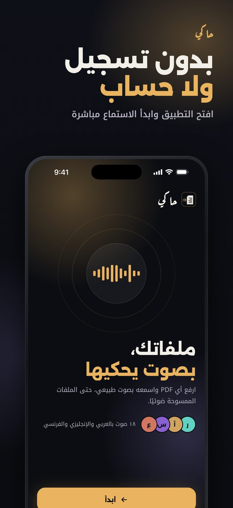
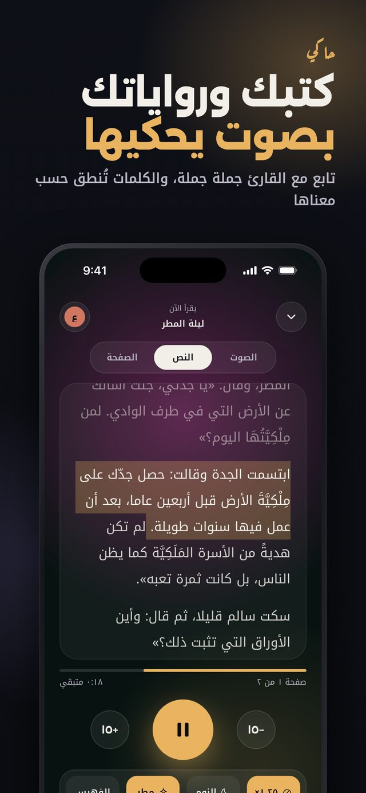
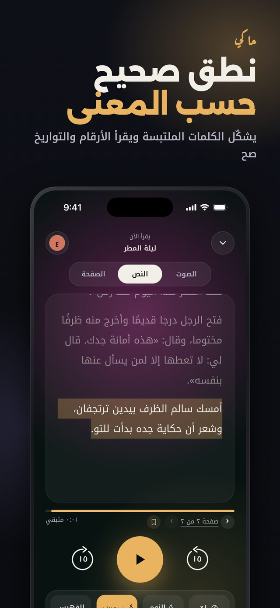
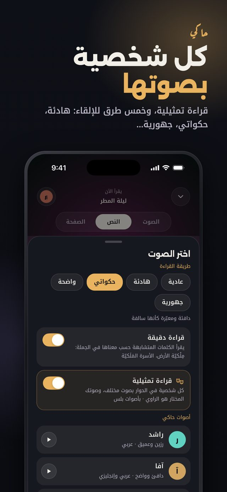
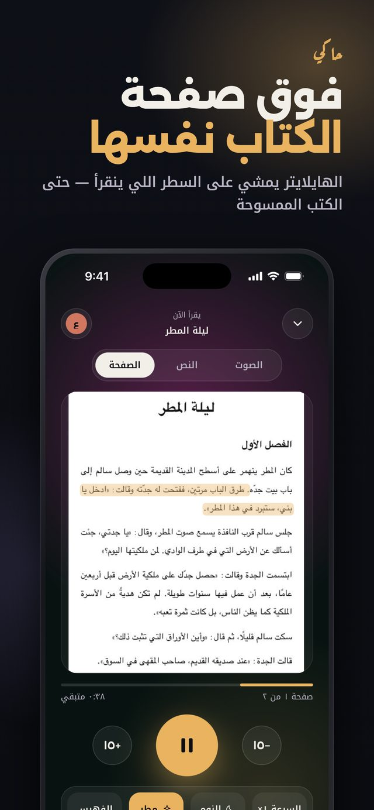
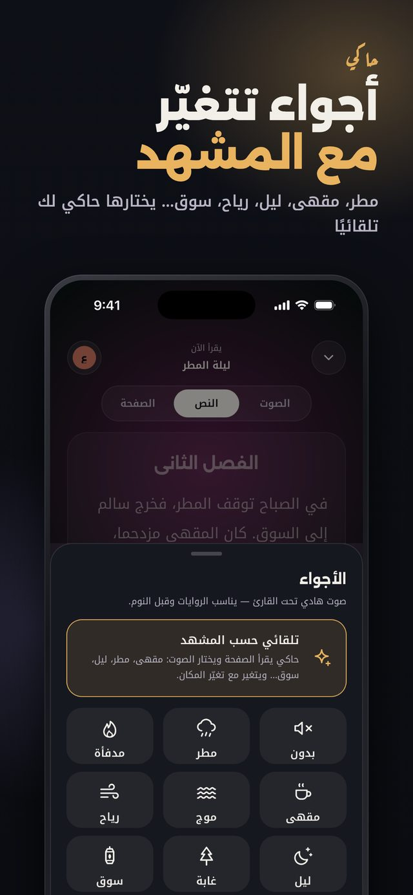
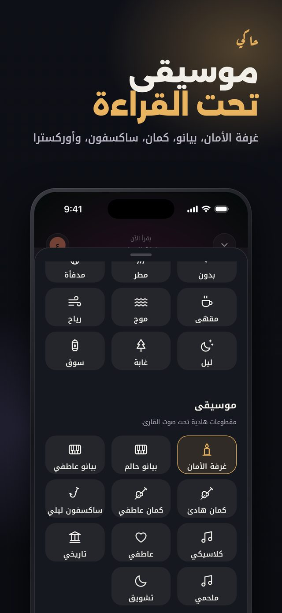
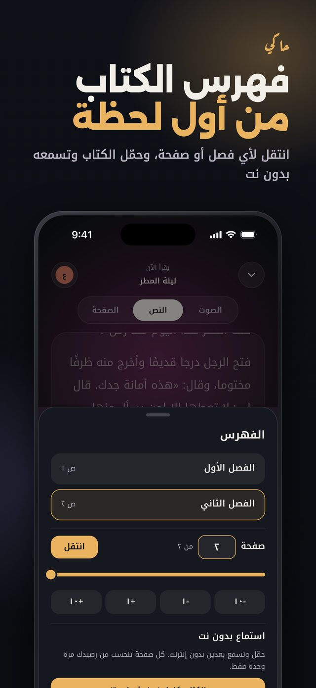
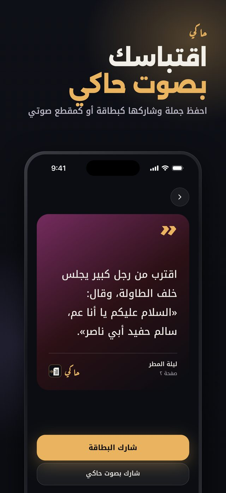

حاكي
ملفاتك، بصوت يحكيها
حاكي تطبيق آيفون يحوّل أي كتاب PDF، حتى الممسوح ضوئيًا، إلى كتاب صوتي بصوت طبيعي ونطق عربي صحيح حسب معنى الكلام. بدون تسجيل ولا حساب، وأول ٥ صفحات مجانًا.
- نطق صحيح حسب المعنى، والأرقام والتواريخ تنقرأ صح
- قراءة تمثيلية: كل شخصية في الرواية بصوت
- ١٨ صوت بالعربي ولهجات خليجية ومصرية وعراقية
- تابع مع النص أو فوق صفحة الكتاب الأصلية
- أجواء وموسيقى تحت القراءة، وفهرس، واستماع بدون نت
صور التطبيق للاستخدام الإعلامي (اضغط على الصورة لفتحها بحجمها الكامل):


















للتواصل: صفحة الدعم